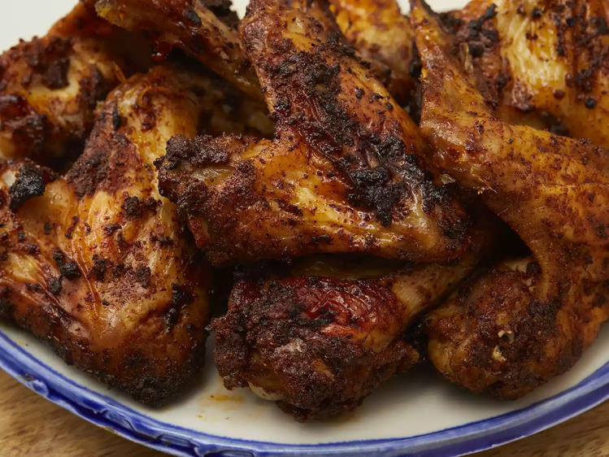

- 1 tablespoon dark brown sugar
- 1 tablespoon sweet paprika
- ½ tablespoon kosher salt
- 1 teaspoon garlic powder
- 1 teaspoon onion powder
- 1 teaspoon poultry seasoning
- ½ teaspoon mustard powder
- ½ teaspoon freshly ground black pepper
- 8 chicken wings, or more as needed
- 1. Preheat the air fryer to 350 degrees F (175 degrees C).
- 2. Whisk together brown sugar, paprika, salt, garlic powder, onion powder, poultry seasoning, mustard powder, and pepper in a large bowl. Toss in chicken wings and rub seasonings into chicken with your hands until fully coated.
- 3. Arrange wings in the air fryer basket, standing them up on their ends and leaning against each other and the wall of the basket.
- 4. Cook in the preheated air fryer until wings are tender inside and golden brown and crisp on the outside, about 35 minutes. Transfer wings to a plate and serve hot.